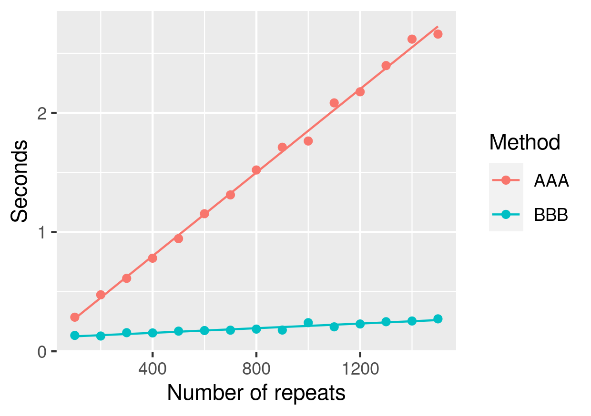

aez-notes
Table of Contents
Numerics notes
Numbers
IEEE-754 compliant double precision numbers have a precision of about 16 decimal places.
Numeric differentiation
The following functions use a five-point stencil to compute first and second derivatives and have an error of order \(h^4\)
firstDerivative :: Floating a => a -> (a -> a) -> a -> a firstDerivative h f x = (-f (x + 2 * h) + 8 * f (x + h) - 8 * f (x - h) + f (x - 2 * h)) / (12 * h) secondDerivative :: Floating a => a -> (a -> a) -> a -> a secondDerivative h f x = (-f (x + 2 * h) + 16 * f (x + h) - 30 * f x + 16 * f (x - h) - f (x - 2 * h)) / (12 * h ** 2)
Gradient
The firstDerivative function above can then be used to numerically evaluate
the gradient
-- | The gradient vector computed using 'firstDerivative'.
gradient :: Floating a => a -> ([a] -> a) -> [a] -> [a]
gradient h f x =
let n = length x
es = [replicate (i-1) 0 ++ [1] ++ replicate (n-i) 0 | i <- [1..n]]
g e d = f [xi + d * ei | (xi,ei) <- zip x e]
in [firstDerivative h (g e) 0.0 | e <- es]
Mathematical optimisation
Nelder-Mead
The Nelder-Mead algorithm is a gradient free method which is a simple way to get a rough estimate. The rule of thumb for the number of iterations to use for this algorithm should be roughly 20–200 times the dimension of the search space.
Golden section
The golden section algorithm is a gradient free method which can be used to obtain an estimate up to a precision of about \(\sqrt{\epsilon}\) where \(\epsilon\) is machine precision. To initialise it, three points are needed, \(a,b,c\) such that \(a < b < c\) and \(f(a) > f(b) < f(c)\). The name comes from the fact that one of the parameters of the algorithm is the golden ratio.
data Golden = Golden { gPoint :: Double
, gValue :: Double
, gDerivative :: Double } deriving (Show)
-- | Bracket the minimum
--
-- >>> bracket (\x -> x * (x - 1)) 0 0.1
--
bracket :: (Double -> Double)
-> Double
-> Double
-> Either String (Double,Double,Double)
bracket f a b =
let g = 1.618034
c = b + g * (b - a)
(fa, fb, fc) = (f a, f b, f c)
in if | a > b -> bracket f b a
| fa < fb -> Left "initial points given to bracket do not go downhill"
| fb < fc -> Right (a,b,c)
| otherwise -> bracket f b c
-- | Golden section search.
--
-- >>> golden (\x -> x * (x - 1)) (0.26,0.52,0.94)
--
golden :: (Double -> Double)
-> (Double,Double,Double)
-> Either String Golden
golden f (a,b,c) =
let
r = 0.61803399
tol = 3.0e-8
(fa,fb,fc) = (f a,f b,f c)
(x0,x3) = (a,c)
(x1,x2) = if abs (c-b) > abs (b-a)
then (b,r*b+(1-r)*c)
else ((1-r)*a+r*b,b)
(xmin,fmin) = gwl r tol f (x0,x1,x2,x3) (f x1,f x2)
fder = firstDerivative tol f xmin
in if a < b && b < c && fa > fb && fb < fc
then Right $ Golden xmin fmin fder
else Left "invalid triple given to golden"
-- | Golden while loop
gwl :: Double
-> Double
-> (Double -> Double)
-> (Double,Double,Double,Double)
-> (Double,Double)
-> (Double,Double)
gwl r tol f (x0,x1,x2,x3) (f1,f2) =
if abs (x3 - x0) > tol * (abs x1 + abs x2)
then if f2 < f1
then let x' = r*x2+(1-r)*x3
in gwl r tol f (x1,x2,x',x3) (f2,f x')
else let x' = r*x1+(1-r)*x0
in gwl r tol f (x0,x',x1,x2) (f2,f x')
else if f1 < f2
then (x1,f1)
else (x2,f2)
LogSumExp function
Consider the LogSumExp (LSE) function
\[ \text{LSE}(x_1,\dots,x_n) = \log\left(\sum_i e^{x_i}\right). \]
Let \(x^* = \max\{x_i\}\) and this can equally be expressed as
\[ x^* + \log\left(\sum_i e^{x_i - x^*}\right) \]
which only takes the exponents of numbers closer to zero and hence can will not overflow or underflow as easily.
logSumExp :: (Floating a, Ord a) => [a] -> a logSumExp xs = x' + log (sum [exp (x - x') | x <- xs]) where x' = maximum xs
Combinatoric functions
The following is taken from the math-functions haskell package which
demonstrates some useful implementations of functions for working with binomial
coefficients.
----------------------------------------------------------------
-- Combinatorics
----------------------------------------------------------------
-- |
-- Quickly compute the natural logarithm of /n/ @`choose`@ /k/, with
-- no checking.
--
-- Less numerically stable:
--
-- > exp $ lg (n+1) - lg (k+1) - lg (n-k+1)
-- > where lg = logGamma . fromIntegral
logChooseFast :: Double -> Double -> Double
logChooseFast n k = -log (n + 1) - logBeta (n - k + 1) (k + 1)
-- | Calculate binomial coefficient using exact formula
chooseExact :: Int -> Int -> Double
n `chooseExact` k
= U.foldl' go 1 $ U.enumFromTo 1 k
where
go a i = a * (nk + j) / j
where j = fromIntegral i :: Double
nk = fromIntegral (n - k)
-- | Compute logarithm of the binomial coefficient.
logChoose :: Int -> Int -> Double
n `logChoose` k
| k > n = (-1) / 0
-- For very large N exact algorithm overflows double so we
-- switch to beta-function based one
| k' < 50 && (n < 20000000) = log $ chooseExact n k'
| otherwise = logChooseFast (fromIntegral n) (fromIntegral k)
where
k' = min k (n-k)
-- | Compute the binomial coefficient /n/ @\``choose`\`@ /k/. For
-- values of /k/ > 50, this uses an approximation for performance
-- reasons. The approximation is accurate to 12 decimal places in the
-- worst case
--
-- Example:
--
-- > 7 `choose` 3 == 35
choose :: Int -> Int -> Double
n `choose` k
| k > n = 0
| k' < 50 = chooseExact n k'
| approx < max64 = fromIntegral . round64 $ approx
| otherwise = approx
where
k' = min k (n-k)
approx = exp $ logChooseFast (fromIntegral n) (fromIntegral k')
max64 = fromIntegral (maxBound :: Int64)
round64 x = round x :: Int64
Factorial
The factorial function has the following definition for positive integers
\[ n! = n \cdot (n-1) \cdot (n-2) \cdot \dots \cdot 2 \cdot 1 \]
It is related to the gamma function by \(x! = \Gamma ( x + 1)\). So you only need a safe implementation of the gamma function to work with factorials.
Pochhammer
For a positive integer, \(n\), the Pochhammer function, rising factorial, is given by
\[ x^{(n)} = x \cdot (x+1) \cdot \dots \cdot (x+n-1) = \prod_{i=0}^{n-1} (x+i) \]
with \(x^{(0)} = 1\). It is related to the factorial function and gamma function
\[ x^{(n)} = \frac{(x + n - 1)!}{(x-1)!} = \frac{\Gamma(x+n)}{\Gamma(x)} \]
So you only need a safe implementation of the gamma function to work with the Pochhammer function.
Computational complexity
Suppose you have a program that depends on a parameter n and takes t seconds
to evaluate. The following snippet can be used as a starting point for
estimating how long it will take to run on a larger input.
df <- data.frame(t = c(38,106,255,847), n = c(180,190,200,210)) ggplot(data = df, mapping = aes(x = n, y = t / 60)) + geom_point() + scale_y_log10(n.breaks = 10) + geom_smooth(method = "lm", fullrange = TRUE) + xlim(c(170, 220))
Of course, this assumes an exponential complexity, but is easy to tweak for polynomial complexity.
Time
Here is a table that might help you decide is something runs fast enough.
| Seconds | Convenient |
|---|---|
| \(10^{0}\) | \(<1\) minute |
| \(10^{1}\) | \(<1\) minute |
| \(10^{2}\) | \(\approx 2\) minute |
| \(10^{3}\) | \(\approx 20\) minutes |
| \(10^{4}\) | \(\approx 3\) hours |
| \(10^{5}\) | \(\approx 1\) day |
| \(10^{6}\) | \(\approx 10\) days |
Caching results
Consider the following Java programs. The first one computes the logarithms each time they are used.
public class AAA {
public static void main(String[] args) {
double size = 100000;
double answer = 1051287.7089736538;
int repeats = Integer.parseInt(args[0]);
for (int m = 0; m < repeats; m++) {
double x = 0;
for (double n = 1.0; n < size; n+=1.0) {
x += Math.log(n);
}
if (x != answer) {
throw new RuntimeException("incorrect value");
}
}
}
}
The second saves the results in an array and re-uses them.
public class BBB {
public static void main(String[] args) {
int size = 100000;
double answer = 1051287.7089736538;
int repeats = Integer.parseInt(args[0]);
double[] ls;
ls = new double[size+1];
for (int ix = 0; ix <= size; ix++) {
ls[ix] = Math.log(ix);
}
for (int m = 0; m < repeats; m++) {
double x = 0;
for (int n = 1; n < size; n++) {
x += ls[n];
}
if (x != answer) {
throw new RuntimeException("incorrect value");
}
}
}
}
Running this program with varying number of repeats and timing the evaluation produces the dataset shown in Listing 1 which is also shown in Figure 1. This shows that for even reasonably small problems it is useful to cache results.

method,repeats,seconds AAA,100,0.286 AAA,200,0.474 AAA,300,0.612 AAA,400,0.781 AAA,500,0.945 AAA,600,1.154 AAA,700,1.312 AAA,800,1.521 AAA,900,1.712 AAA,1000,1.764 AAA,1100,2.084 AAA,1200,2.177 AAA,1300,2.397 AAA,1400,2.619 AAA,1500,2.661 BBB,100,0.133 BBB,200,0.128 BBB,300,0.156 BBB,400,0.154 BBB,500,0.169 BBB,600,0.174 BBB,700,0.177 BBB,800,0.186 BBB,900,0.178 BBB,1000,0.240 BBB,1100,0.205 BBB,1200,0.229 BBB,1300,0.248 BBB,1400,0.254 BBB,1500,0.272